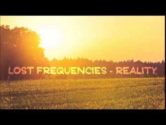
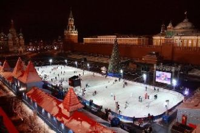
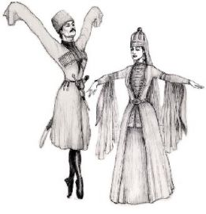
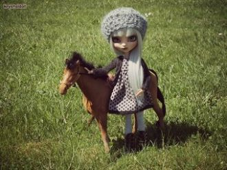

Decisions as I go, to anywhere I flow Sometimes I believe, at times where I should knowI can fly high, I can go long

Каждому из нас белою зимой хочется тепла,Чтоб покрепче чай, потеплее плед. За окном пурга,И мне не холодно, если ты рядом.
Намело белым-бело в парке и аллее,Не изменит ничего наше настроение. Мандариновые дни елки и гирлянды,Светлых вам побольше дней,
Орайра орирайда орайдарида ма орайдаОйра орирайра орайдарида ма орайдаОрайра орирайда орайдарида ма орайдаОйра орирайра орайдарида ма орайда

Мы уэрэдыр хэкIуэтауэ пхуэзусамиМы си щхьэцым уэс мыткIужыр къытесамиСэ къысфIощIыр уэрэ сэрэ япэу нобэ дызэхуэзэр
Адыгэ пшынэм щlыгур къыпэджэмэ, уоирэ, уорирэ, уойра,Бжэlупэ джэгум къуажэр зэхишэмэ,Хъуэхъубжьэ усэр псэм зэхидзыжымэ,

Дызэрц1ык1урэ дызэпылъти, ой си Адиюх, дызэрц1ык1урэ ф1ыуэ слъагъурт ой си Адиюх.
Ущызмылъагъук1эрэ сэСи гум укъок1эри уэПсынэпсу къабзэураСи гур уэ пхуэкъабзэураСыту ф1ыщу сэ услъагъуа
-1- Мазэгъуэ жэщым псэхэр зэхещ1э Дзапэ уэрэдым симыгъэжей Дуней щ1эращ1эщ бгырыс нысащ1эр Ар зэхэзыщ1эм имы1э жей
I breathe clouds beneath my window I see rockets in the sky I feel satellites in limbo I breathe oxygen up high
Like a movie scene In the sweetest dreams Have pictured us together Now to feel your lips On my fingertips I have to say is even better
Möödud sa minust aeglaseltNaeratad lihtsalt kõnnid eesKeha sul super prink nii heaPilk jääb mul seisma su kanni peal
Издалёка в далёко путь держала река. А просторы ласкали ее берега. На крутом берегу там юный тополь рос. Речку вольную он любил до слёз.
In a few weeks I will get timeTo realise it's right before my eyesAnd I can take it if it's what I want to do
Oh the weather outside is frightful, But the fire is so delightful,And since we've no place to go,Let It Snow! Let It Snow! Let It Snow!
Gözyaşım kederden miydi yarimÇektiğim kaderden miydiİçtim hep ona sarıldım yarimTek dostum kadehler miydi Adını dağlara yazdım yarim
Sibel Can
Terk Edip Gittiğinden Beri
Kalbime Lokma Aşk Girmedi
Sahipsiz Kaldım Yalan Gibi
Bozgunum Senden Bi Nedeni
Terk edip gititğinden beri Kalbime lokma aşk girmedi Sahipsiz kaldım Yalan gibi Bozgunum senden bile deli Yandı mı canın benim gibi
Bu Akşam Yine Dertlerimle (Baş Başa Kaldım)Bu Akşam Yine Dertlerimle (Baş Başa Kaldım)Sen Gençliğimin Katilisin (Çok Geç Anladım)(Çok Geç Anladım)
Enehen horvoo buhleereeEgel hunii olgii bileeEgel hun ny oluulaaEnehen horvood ezen ny bilee Hun gantshan ezen ny bolohooroo